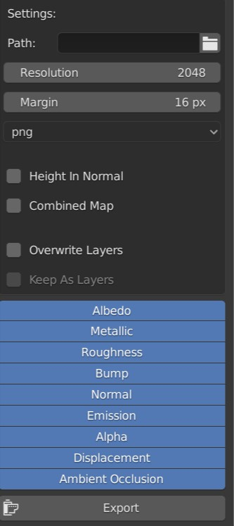

Map Export

This allows you to export your created material to be used in another software or just to optimize your material.
You have the option to choose a path where the images should be saved. You can also select the resolution for the baked images, as well as the bake margin. Finally you can choose the file format.
The option to bake the Height into the normal map allows you to combine your height channel with your normal channel.
Below you can choose the overwrite layers option. This will apply the baked images directly to your material and remove the layers you added. You can check the keep as layers option to still keep the option of adding more layers.
The list of channels allows you to select what channels should be baked.
Combined Map
When you have the combined map option checked, you will get three dropdowns to choose what channels should get baked into the texture. You can choose a channel for the red, green and blue channel.